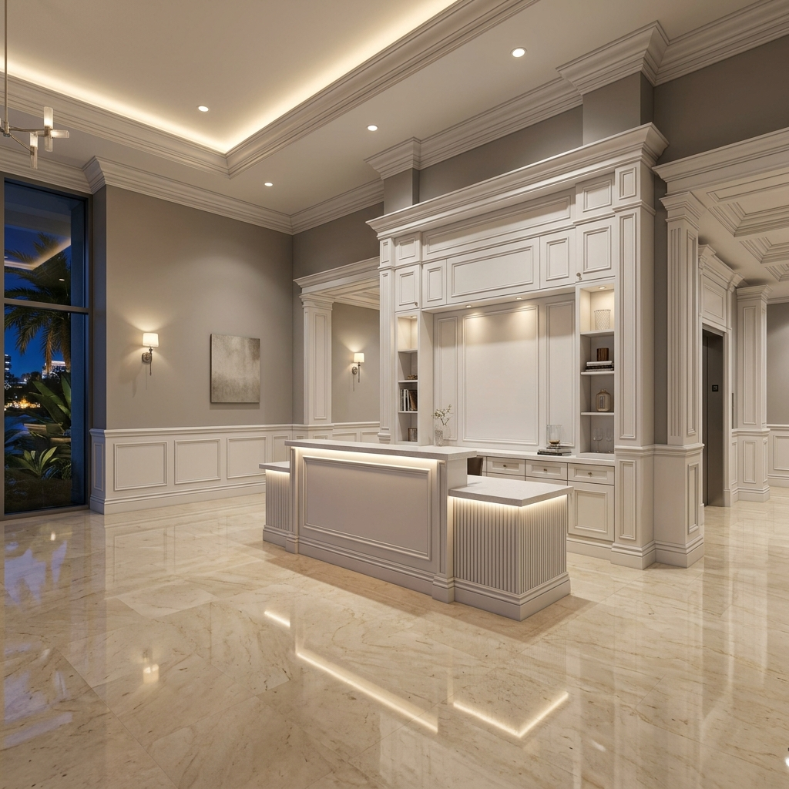

Documented project · Millwork Installation
Reception Millwork and Marble Floor Coordination
This documented millwork installation project took place in Broward County, Florida within a commercial reception area. The reception improvement required new architectural millwork to be coordinated with marble floor restoration in the same overall scope. Livane Renovation's recorded scope included wainscoting installation, crown molding package, custom reception desk cabinetry, coordination with marble floor restoration. The recorded result combines installed reception millwork with a coordinated restored marble floor finish. Where the source material does not identify products, dates or technical settings, those details are deliberately left unspecified rather than inferred.

Existing condition
What the record shows before work
The repository documents the coordinated improvement scope but does not state the marble's original damage class or the condition of the prior millwork.
Scope
Documented work
- Wainscoting installation
- Crown molding package
- Custom reception desk cabinetry
- Coordination with marble floor restoration
Method
How the scope was approached
The documented method is field installation and finish coordination across millwork and an adjacent marble restoration scope. Fabrication details and the marble abrasive sequence are not present in the source.
- 1Verify field dimensions and finish interfaces
- 2Sequence floor restoration and millwork protection
- 3Install and align architectural millwork components
- 4Coordinate reception cabinetry with adjoining finishes
- 5Complete detailing and combined punch review
Materials and surfaces
Recorded finish context
- Wainscoting
- Crown molding
- Reception cabinetry
- Marble flooring
Constraints
Conditions that shaped the work
- Protect restored marble during millwork installation
- Coordinate separate surface and carpentry operations
- Maintain precise reception-area finish interfaces
Result
Documented outcome
The recorded result combines installed reception millwork with a coordinated restored marble floor finish.
No verified before image is published for this project, so this page does not present an inferred before-and-after comparison.
Evidence basis: Existing renovation project gallery. Unrecorded project details are not inferred.
Related expertise